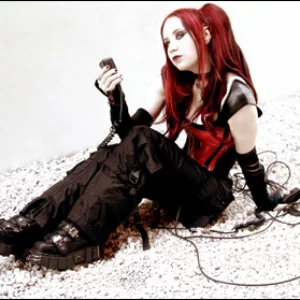

Diva Destruction es una banda gótica de Estados Unidos conocida por su estilo oscuro y melancólico. Fue fundada en 1998 por Debra Fogarty, la líder.
Diva Destruction también ha participado durante varios años consecutivos en el Wave-Gotik-Treffen,
celebrado en Alemania, y el pasado 2007 también estuvo en sus filas.
Diva Destruction fue ganadora de la "Mejor banda gótica de LA" durante dos años consecutivos.
| Actualmente, Diva Destruction consiste solo de un miembro: Debra Fogarty. | Ella es quien siempre ha cantado, escrito, programado y producido todos los álbumes. | El grupo de música se ha convertido en un grupo llevado por solo una persona, sin embargo Debra sigue produciendo música, desde hace años hasta la actualidad (2024). |
| Benn Ra | Sharon Blackstone | Jimmy Cleveland | Anthem | Severina Sol |
|---|---|---|---|---|
|  |